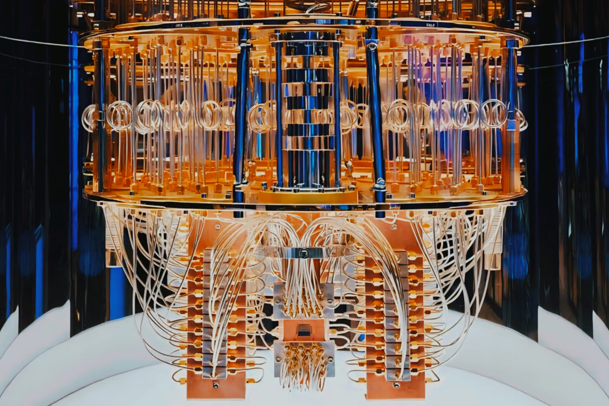

Published: 24-09-2024
Quantum Computing
We all use computers more or less in our daily needs. When we perform any task using a computer, the computer takes input from us and converts it into binary numbers. For the flow of information in this digital system, many codes like \(ASCII\) or \(UNICODE\) have been created, but at its core are \(0\) and \(1\), which is known as the binary number system. Again, in our daily lives, we perform tasks using various electronic devices, and at the heart of these tasks are \(0\) and \(1\). The transistors, microchips, and other small electronic components that we use today are fundamentally based on \(0\) and \(1\).
Nowadays, we use ordinary computers for various tasks and problem-solving in our daily lives, and in some cases, we find that our modern computers take considerable time to solve certain problems. To overcome this, scientists have developed supercomputers that have significantly reduced the time needed. However, even today's supercomputers struggle with complex calculations and problem-solving, and in some cases, they may take thousands to millions of years. To overcome this, the concept of quantum computing was first proposed by physicist Richard Feynman in 1982 during a lecture titled "Simulating Physics with Computers" at the annual meeting of the American Physical Society.
Before understanding quantum computing, we first need to understand quantum mechanics. Quantum mechanics is the science of the subatomic level of matter and is a branch of modern physics. Quantum mechanics deals with the subatomic level of matter. When we look at the electron configuration diagram of an element, we usually see electrons moving in a specific orbit. But in reality, the electron is present throughout the orbit, which is known as quantum superposition. It is impossible to determine both the position and velocity of an electron simultaneously and precisely. If the position is precisely known, the superposition will collapse. To explain this more simply, imagine a coin with heads on one side and tails on the other. When you toss it into the air, it will simultaneously be in both the heads and tails positions, because until it lands, we cannot say whether it will be heads or tails, and this is quantum superposition. The superposition will collapse once we determine its specific position (i.e., heads or tails) after it lands. In 1980, Feynman thought that if we could use this superposition property of subatomic particles in our computing system, it could perform many tasks at the same time very quickly. This idea marked the beginning of quantum computing, which we now see in IBM's Q System One quantum computer.
Now let's learn about the basic principles of classical computers and quantum computers! Classical computers work using binary numbers or bits, with base values of \(0\) and \(1\). Each bit represents a power of \(2\) \((2^0 = 1, 2^2 = 4,
2^4 = 16)\) For example, one bit can have two inputs (\(0\) and \(1\), two bits can have four inputs \((00, 01, 10, 11\)) and so on. As the number of bits increases, the number of possible inputs also increases. For example, ten bits can represent \(1,024\) inputs, and \(16\) bits can represent \(65,536\) inputs. Transistors are the building blocks of classical computers, working based on bits, where \(1\) represents the transistor being on, and \(0\) represents it being off. In essence, if we explain the difference between bits and qubits, a bit can either be \(0\) or \(1\), but a qubit can be \(0\) and \(1\) simultaneously, which is known as quantum superposition.

Imagine, if the classical bit \(0\) represents the North Pole of the Earth, then undoubtedly, \(1\) would represent the South Pole. But due to quantum superposition, the position of a qubit is not limited to these poles, but it can exist anywhere between them. In that case, a qubit can be represented using Dirac notation of quantum mechanics: \(α|1⟩ + β|0⟩ = |Q⟩\); where \(α\) and \(β\) are complex numbers, which can be used to calculate the exact state of the qubit by determining the proportional representation of \(0\) and \(1\). To understand this more easily, imagine an electron that can exist in two states simultaneously (for example, spin up and spin down). While a classical bit requires two states (\(0\) and \(1\)), a qubit can achieve this with just one. By using two qubits, four states can be represented \((00, 01, 10, 11\)) and by adding another qubit, eight states can be achieved \((000, 001, 010, 011, 100, 101, 110, 111\)). In other words, each additional qubit doubles the number of possible states. With eight qubits, or one qubyte, it’s possible to handle the work of \(256\) inputs in classical computing. The current supercomputers, which take days to perform calculations (such as accurate mechanical analysis of biological processes), could complete these tasks in just a few seconds with a \(50\) kilobyte quantum computer.
The second principle of quantum mechanics that comes into play here is quantum entanglement. Quantum entanglement is a phenomenon where quantum particles become interrelated in such a way that the state of one particle directly depends on the state of the other, no matter how far apart they are. The distance between them doesn’t have any effect here. For example, consider the case of hydrogen and helium atoms. A hydrogen atom has only one electron, whose spin can be either \(+\frac{1}{2}\) or \(-\frac{1}{2}\). Until observed, it's impossible to predict what the electron's spin will be with certainty. In the case of helium, where two electrons are in the same orbit, they must follow the Pauli's exclusion principle. This means if one electron has a spin of \(+\frac{1}{2}\), the other must have a spin of \(-\frac{1}{2}\). The remarkable aspect of quantum mechanics is that until an electron is observed, we cannot definitively determine the spin of any given electron. Once the spin of one electron is measured, the spin of the other electron is instantly known. This phenomenon is quantum entanglement. In quantum computing, entanglement enables calculations across multiple qubits simultaneously.
Now, let’s talk about logic gates. A logic gate is a type of digital electronic circuit that performs various logical operations using Boolean algebra. Logic gates generally refer to logic circuits that have one or more binary inputs and only one output.

There are 3 types of basic logic gates. These are:
\(AND\) gate
\(OR\) gate
\(NOT\) gate
In a classical computer, if two inputs, \(0\) and \(1\), are passed through an \(AND\) gate, the results are as belows: \(0\) \(AND\) \(0 = 0,\) \(0\) \(AND\) \(1 = 0,\) \(1\) \(AND\) \(0 = 0,\) \(1\) \(AND\) \(1 = 1\). When passed through an \(OR\) gate, the results are: \(0\) \(OR\) \(0 = 0,\) \(0\) \(OR\) \(1 = 1,\) \(1\) \(OR\) \(0 = 1,\) \(1\) \(OR\) \(1 = 1\). When passed through a \(NOT\) gate, the input gets inverted, for example, \(0\) \(NOT\) \(= 1,\) \(1\) \(NOT\) \(= 0\), and so on. Quantum logic gates are almost similar to classical logic gates, but they are more complex due to the inputs of qubits depending on quantum probabilities.

Quantum logic gates are time-dependent. The most well-known quantum gate is the Hadamard gate or H gate. This quantum gate is named after the French mathematician Jacques Hadamard. The H gate converts the qubit input into a superposition state. In other words, when a \(0\) and \(1\) qubit are passed through an H quantum gate, it creates a superposition state of \(0\) and \(1\). Another basic quantum gate widely used in quantum computing is the Controlled-NOT gate, or \(CNOT\) gate. The CNOT quantum gate works similarly to the Exclusive OR \(XOR\) gate in classical computing. It does not change the value of the controlled qubit input, but it flips the value of the entangled qubit. There are many other types of gates as well, and more will emerge in the distant future.
Now, let's discuss how a quantum computer solves problems.
Qubit Selection: The first step in solving a problem is selecting the required qubits. A qubit is the quantum analog of a classical bit, but unlike a classical bit, it can exist in a superposition state.
Quantum Logic Gates: Once the qubits are selected, they are manipulated using quantum logic gates. These gates perform operations that change the state of the qubits, utilizing their superposition and entanglement properties.
Input Selection: After entangling the qubits, the system begins to operate according to the quantum algorithm. The qubits are manipulated through a series of quantum gates to perform calculations.
Processing: As the qubits pass through quantum gates, quantum computation takes place by exploiting the phenomena of superposition and entanglement, which allows it to process data at a speed far beyond classical computers.
Decoding the Output: Once the result is produced, it is converted back into digital form, creating a set of classical bits. These bits are then decoded from binary to provide the output of the computation. This output is stored as a file in a classical computer.
Classical mechanics and quantum mechanics are entirely different. The electronic devices we use today are based on quantum mechanics, not classical. When comparing quantum computing and classical computing, it's like comparing a candle to an electric light. Both provide light, but the mechanism behind it is different. If classical computers are like candles, then quantum computers are like electric lights. This demonstrates just how powerful quantum computers are compared to classical ones. Even a thousand classical computers working together would never be able to perform the same tasks as a quantum computer.
Imagine you are placed inside a QR code and asked to find a way out. If you were a classical computer, it might take you a lot of time to find the way out, as you would have to search through paths one by one. But if you were a quantum computer, several carbon copies of you would simultaneously explore the QR code, meaning you would be present everywhere at once and searching for the path. Once any of your copies finds the way, you'd be able to exit quickly, and this entire task would be completed at an extremely fast speed. After a research paper on the mechanism of quantum computing was published in 1985 by Oxford University physicist David Deutsch, research on quantum computing began to accelerate. Then in 1994, Bell Labs scientist Peter Shor wrote the first quantum algorithm for a quantum computer.
Now, let's discuss how a qubit is created, or rather, what materials are used. It is typically created by placing a single photon, electron, or nucleus in a special circuit. To maintain quantum superposition, it is kept near absolute zero temperature, ensuring that external factors such as temperature, electromagnetic fields, or external impacts don't interfere with or break the quantum superposition state.
When it comes to the capability of qubits, with just \(500\) qubits, you could store more information than the number of atoms in the observable universe.
Sources: Wikipedia, Magazine, Internet
To read the Bengali version of this article- Download as PDF
This article has been published in the second issue of Somantoral Magazine